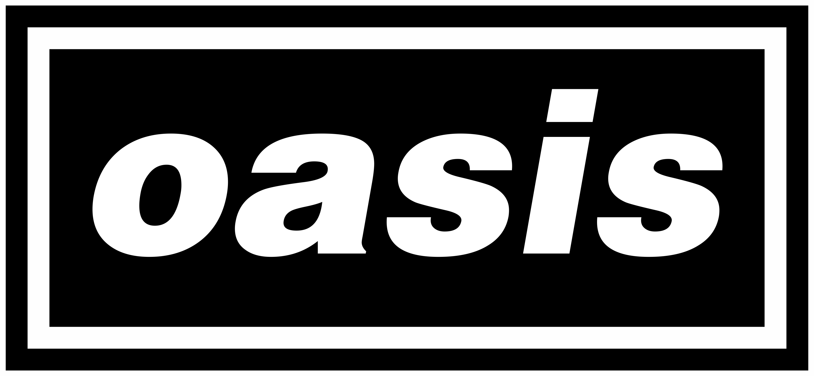

Información sobre el grupo musical Oasis

Datos generales
- Origen y año de formación: Mánchester, 1990
- Género musical: Brit Rock
- Álbum más vendido: Be Here Now
- Total de álbumes vendidos: 100 millones de copias
- Premios: BRIT Award en 2007 por su «notable contribución a la música»
- Más información: Datos generales
Miembros
- Voz: Liam Gallagher
- Voz, guitarra líder: Noel Gallagher
- Guitarra, teclado: Andy Bell
- Guitarra rítmica: Gem Archer
- Batería: Alan White
- Más información: Miembros
Discografía
- 1994: Definitely Maybe
- 1995: (What's the Story) Morning Glory?
- 1997: Here Now
- 2000: Standing on the Shoulder of Giants
- 2002: Heathen Chemistry
- 2005: Don't Believe the Truth
- 2008: Dig Out Your Soul
- Más información: Discografía
Influencias musicales
- Influencia principal: The Beatles
- Brit Rock: The Who, The Smiths
- Brit Pop: The Verve, Blur
- Influenciados por Oasis: Arctic Monkeys, Kasabian, The Killers
- Más información: Influencias musicales
GREATEST HITS